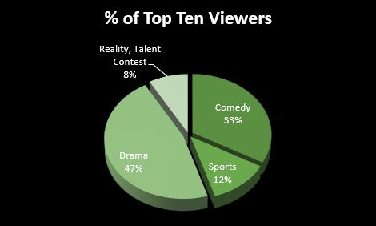
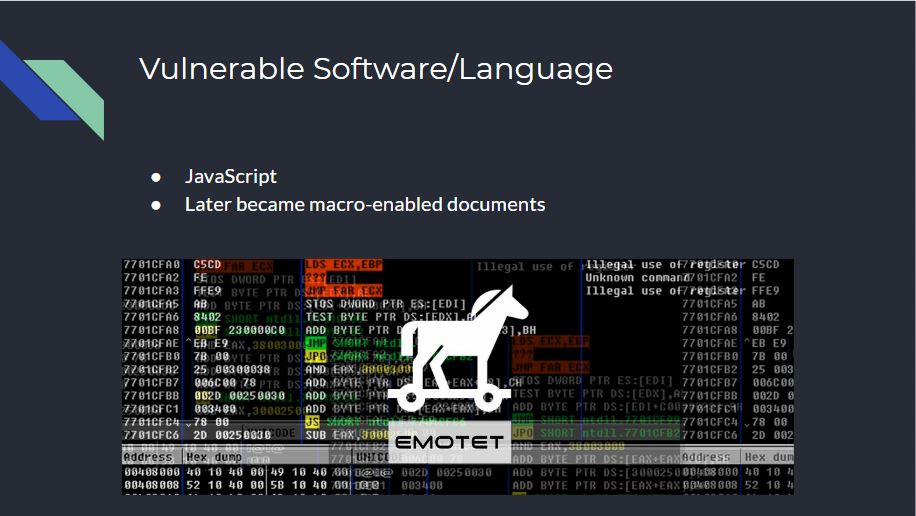
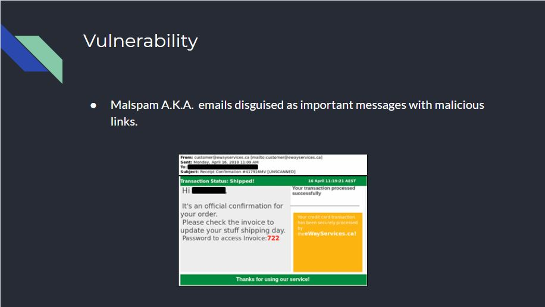
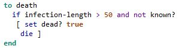
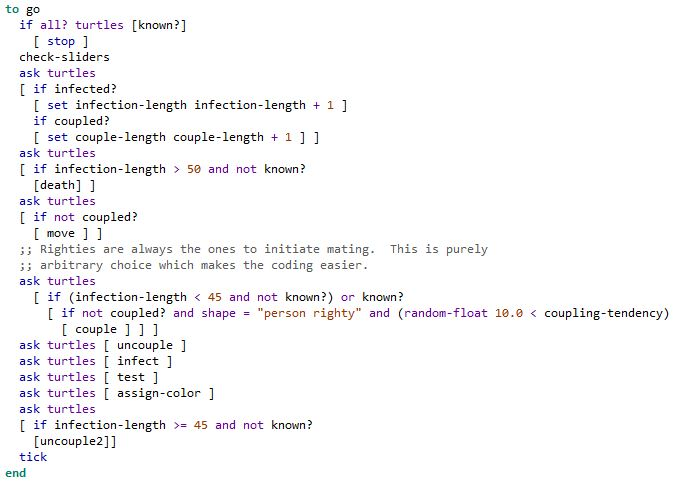
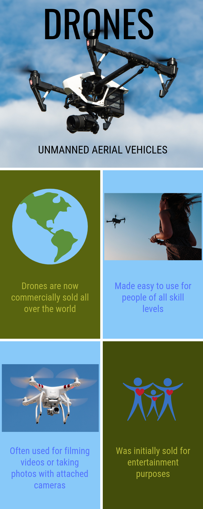

This page is to showcase my projects. I will keep a running list of my important projects here. Under the list I will have details about each game.
First Large Scratch Game
First Large App Inventor App
Python Interactive Story
Python Project You Love; GPA Calculator
Big Data
Malware
Simulation Modification
Create Task
Explore Task
In this game, you play as characters based on Don Lugos LEAD academy teachers. The game is a parody of the Legend of Zelda games with additions from other games as well. In the preview shown above you see the movement of the character as well as some dialouge and a portion of the first boss battle. In this game I got more experience with coding in Scratch, using the scrum method, and was able to intergrate the mouse and keyboard in the game. It helped me with practicing the development of code process.
In this app, which we call "Choose That Pokemon", you are able to see information on all the starter pokemon of every generation of Pokemon. We used the MIT App Inventor website to create this app. In the app, you are able to pick the generation of pokemon that you want to chose from and afterwards you are able to choose from the three starters in any particular order. You can also go back to the generation menu at any time with the 'Back' button in the top left corner.
In this project, we made a story that could be changed by the user. The story was made as a tribute to Mr. Engstrom, which is why he is the main character. You read from his perspective and make decisions based on what happened in the story. You are given two options and told to pick between the two by entering a letter designated for each choice. We made it using python version 2.7 on the website repl.it.
In this project, we made a calculator for GPA's based on the class grades the user would enter. It takes into account the weighted grades system and has instructions to work with that. The user just puts in all of the letter grades they currently have and the code will count how many classes they have and the total amount of GPA points they get. It divides that to get the total GPA. It then reports that GPA and repeats itself. We also made this on python version 2.7 on the website repl.it.

In this project, we found sets of data on the most viewed television shows in the USA in 2018. We used this data to find the most viewed genre of television. The graph below shows the percentages of the USAs favorite television genre.
In this project,
 In this project,
 In this project,
In this project,
